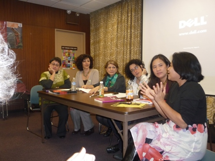

پذيرش > تریبون > گزارش كمپين > گزارش پانل بررسی جهانی وضعیت زنان مدافع حقوق بشر در اجلاس پنجاه و پنجم کمیسیون مقام (...)


 گزارش پانل بررسی جهانی وضعیت زنان مدافع حقوق بشر در اجلاس پنجاه و پنجم کمیسیون مقام زن گزارش پانل بررسی جهانی وضعیت زنان مدافع حقوق بشر در اجلاس پنجاه و پنجم کمیسیون مقام زن
21 فروردین 1390 - - نسخه قابل چاپ
تغییر برای برابری: پانل بررسی جهانی وضعیت زنان مدافع حقوق بشر در 28 فوریه 2011 (9 اسفند 1389) عنوان یکی از نشست های جانبی هماهنگ شده توسط ائتلاف بین المللی زنان مدافع حقوق بشر به عنوان جمعی از سازمان ها و گروه های غیردولتی در اجلاس سال جاری کمیسیون مقام زن بود که با حضور نمایندگانی از انجمن حقوق زنان در توسعه، مرکز حقوق باروری و دو سازمان دیگر عضو این ائتلاف پیرامون موضوعاتی از جمله حقوق بشر، برنامه ها و فعالیت های سازمان های بین المللی مربوط به حقوق باروری در ساختمان چرچ سنتر برگزار شد. در واقع هماهنگ کننده اصلی این پانل " ائتلاف بین المللی زنان مدافع حقوق بشر (WHRD IC) بود. این ائتلاف شبکه ای ترویجی برای حمایت و پشتیبانی زنان مدافع حقوق بشر در سراسر دنیا و ابتکار ناشی از کمپین بین المللی در ارتباط با زنان مدافع حقوق بشر است که در سال 2005 به راه افتاد، این اتحاد بر حمایت از مدافعان حقوق بشر صرفنظر از جنسیت و یا تمایلات جنسی آنها تأکید دارد با این اعتقاد که جنسیت این مدافعان یا ماهیت کارشان موجب شده که از جانب دولت ها و گروه های مختلف مورد حمله قرار بگیرند و بنابراین مکانیزم های حساس به جنسیت برای حمایت از آنها الزامی است. به علاوه حمایت های این ائتلاف بین المللی فعالان زن و مرد یا سایر گروه های جنسی دیگر متعهد به ارتقای حقوق بشر زنان و حقوق جنسی آنها را در بر می گیرد. ائتلاف در حال حاضر متشکل از 23 سازمان یا گروه بین المللی است که عبارتند از: سازمان عفو بین الملل، فروم آسیا پاسیفیک در مورد زنان، حقوق و توسعه (APWLD )، فروم آسیایی حقوق بشر و توسعه (From Asia )، انجمن برای حقوق بشر در توسعه (AWID)، بائوبابا برای حقوق بشر زنان ، مرکز حقوق باروری (CRR)، مرکز رهبری جهانی زنان (CWGL)، اتحاد همجنس گرایان آفریقایی (CAL)، بنیاد بین المللی پیشروان حمایت از مدافعان حقوق بشر (Front Line ) ، نخست حقوق بشر ، ناظر اطلاعاتی (Inform)، فدراسیون بین المللی حقوق بشر (FIDH)، خدمات بین المللی حقوق بشر (ISHR)، ناظر بین المللی اقدام حقوق زنان در آسیا و پاسیفیک ( IWRAW-AP)، ISIS International ، Isis International و سازمان تبادل بین فرهنگی بین المللی زنان (ISIS-WICCE)، کمیته آمریکای لاتین و کارائیب برای دفاع از حقوق زنان (CLADEM)، سازمان بین المللی حقوق زنان (MADRE) ، پل های صلح بین المللی (PBI)، صندوق اقدام ضروری برای حقوق بشر زنان (UAF)، ابتکار زنان برای عدالت جنسیتی (WIGL)، ولوم (WLUML) و سازمان جهانی علیه شکنجه (OMCT)
فعالیت های مهم این شبکه شامل جمع آوری آمار و مستند سازی موارد نقض حقوق زنان مدافع حقوق بشر ، به کارگیری مکانیسم نظارتی برای درخواست های ضروری، آموزش عمومی و سیاست گذاری های ترویجی، تهیه گزارش های جهانی سالانه در مورد وضعیت مدافعان حقوق بشر می شود.
اما پانل هماهنگ شده توسط ائتلاف بین المللی زنان مدافع حقوق بشر چند سخنران داشت که اولین آنها خدیجه مقدم، فعال جنبش زنان و عضو مادران عزادار از ایران بود. خدیجه مقدم در این پانل با عنوان "جنبش زنان در ایران و چالش های آنان "در مورد فعالیت مادران عزادار و فعالان جنبش زنان به عنوان مدافعان حقوق بشر که اعضای کمپین یک میلیون امضا بخشی از آنها هستند هرچند بخش بزرگ آنند و دشواری های آنها در مسیر فعالیتشان سخن گفت که خلاصه ای از این گزارش به استحضار علاقمندان و فعالان حقوق بشر زنان می رسد:
جنبش زنان ایران تاریخی صد ساله دارد . از روزی که زنان برای حق آموزش تلاش کردند تا به امروز که زنان اکثریت ورودی های دانشگاه ها را به خود اختصاص داده اند و زنان جوان و تحصیلکرده ، جنبش زنان ایران را به قوی ترین و پایدار ترین جنبش اجتماعی مردم تبدیل کردند. اما جنبش زنان در ایران، راه ناهمواری را طی کرده و با تبعیض های سنتی و دینی و عرفی به صورت مسالمت آمیزی جنگیده است . زنان در ایران می دانند که حکومت ها می آیند و می روند و صد البته که در ارتقا فرهنگ می توانند نقش منفی یا مثبتی داشته باشند ولی فرهنگ برابری فراتر ازنقش حکومت های دیکتاتوری است .
اگر تاریخچه جنبش زنان را به سه دوره تقسیم کنیم .
- در دوران بعد ازانقلاب مشروطیت ، زنان پیشگام جامعه ، برای بیداری زنان وحق آموزش و حق رای مبارزه می کردند .
- در دوران شاه سابق زنان روشنفکر و مبارز عمدتا در مبارزات ضد دیکتاتوری فعال بودند و تغییرات مثبت در قوانین از طریق سازمان های زنان وابسته به حکومت و از بالا، صورت می گرفت و نه از طریق مبارزات زنان و از پایین .
 در دوران بعد از انقلاب اسلامی ، اکثریت زنان مبارز، تا پایان جنگ با عراق در مبارزات ضدامپریالیستی دوش به دوش مردان مبارزه میکردند وتنها عده ی قلیلی آگاهانه و هوشمندانه برابری خواهی را ترویج می کردند . کانون ها و محفل های 8 مارس ، تنها جایی بود که زنان از برابری سخن می گفتند که از دل این کانون ها بعد از پایان جنگ و در دوران سازندگی ، نشریات و کتاب های زنانه با دیدگاه های فمینیستی، به بازار کتاب راه باز کرد و سپس در دوران اصلاحات تشکل های زنان حول 12 محور دغدغه ی زنان در کنفرانس پکن، به صورت علنی شروع به کار کردند که متاسفانه در حال حاضر مجوز ادامه ی فعالیت آنها از طریق وزارت کشور صادر نشده و دوستان ما تنها به عنوان عضویت در گروهک های غیرقانونی به 5 سال حبس محکوم شده اند . در دوران بعد از انقلاب اسلامی ، اکثریت زنان مبارز، تا پایان جنگ با عراق در مبارزات ضدامپریالیستی دوش به دوش مردان مبارزه میکردند وتنها عده ی قلیلی آگاهانه و هوشمندانه برابری خواهی را ترویج می کردند . کانون ها و محفل های 8 مارس ، تنها جایی بود که زنان از برابری سخن می گفتند که از دل این کانون ها بعد از پایان جنگ و در دوران سازندگی ، نشریات و کتاب های زنانه با دیدگاه های فمینیستی، به بازار کتاب راه باز کرد و سپس در دوران اصلاحات تشکل های زنان حول 12 محور دغدغه ی زنان در کنفرانس پکن، به صورت علنی شروع به کار کردند که متاسفانه در حال حاضر مجوز ادامه ی فعالیت آنها از طریق وزارت کشور صادر نشده و دوستان ما تنها به عنوان عضویت در گروهک های غیرقانونی به 5 سال حبس محکوم شده اند .

یکی از حرکت های بسیار تاثیر گذارفعالان جنبش زنان در ایران، کمپین یک میلیون امضا برای تغییر قوانین تبعیض آمیز است که مدت 4 سال از عمر آن می گذرد . این کمپین با گفتگوی چهره به چهره با مردم و آگاهسازی انان از قوانین تبعیض آمیز، مردم ، بخصوص زنان را به مشارکت در تغییر سرنوشت شان با یک امضا ترغیب و تشویق می نماید .در این حرکت افقی و سیال هر کسی خود می تواند با خواسته های مشخص کمپین ، یک رهبر ، یک رسانه و یک شبکه باشد .هر چند در این چند سال دهها نفر از دوستان ما از جمله خود من بارها و بارها احضار و به زندان و حبس و شلاق محکوم شدیم ولی از پای ننشستیم و به این حرکت مسالمت آمیز ادامه داده و خواهیم داد . محدودیت ها و سرکوب فعالان جنبش زنان و مقاومت و ایستادگی انان، طی سال های گذشته و عمومی شدن آن از طریق اینترنت و تلویزیون های ماهواره ای به زنان نشان داد که می توان بدون وارد شدن به مسائل سیاسی و عضو شدن در سازمان و حزبی ، برای خواسته های خود مبارزه کرد و دیدیم که زنان در جنبش سبزدموکراسی خواهی ایران، چگونه نقش پیشتازی خود را به نمایش گذاشتند .
زنان با حضور خود در انتخابات دهمین دوره ی ریاست جمهوری، از زمان تبلیغات انتخابات با تشکیل همگرایی زنان برای مطالبات زنان خواسته های خود را به میان مردم بردند و بعد از اعلام نتیجه تقلبی انتخابات به خیابان ها ریختند و ضمن اعتراض به نتایج انتخابات هر جا که توانستند مانع اعمال خشونت بر مردم شدند .
تعدادی از مادران صلح با نواری سبز رنگ به صورتی نمادین حایل بین نیروهای انتظامی و مردم شدند . حتمن در فیلم های حرکت سبز مردم دیده اید که چگونه زنان به ضرب و شتم نیروهای پلیس اعتراض می کردند با اینکه خود مورد حمله قرار می گرفتند.در جریان حوادث پس از انتخابات تعداد زیادی از زنان روزنامه نگار- فعال حقوق زنان – فعال حقوق بشر- وکیل – دانشجو – معلم و خانه دار بازداشت و به زندان ها رفتند و با احکام سنگین هنوز در زندان هستند .
چند روز بعد از کشتن شدن ندا سمبل زنان جوان آزادیخواه ایران تعدادی از فعالان جنبش زنان با دادن فراخوانی همه ی مادران و زنان جوان را به پارک لاله دعوت کردند و یک هفته بعد از کشته شدن ندا تعداد زیادی از زنان در پارک لاله جمع شدند و در تجمعی همراه با سکوت با شمع های روشن در دست و عکس های کشته شدگان اعتراض خود را به کشتار ها و در بند کشیدن فرزندان شان نشان دادند .
هر چند در اولین هفته 20 نفر از مادران بازداشت شدند ولی این تجمع با شجاعتی بی نظیر از طرف زنان ادامه یافت و هم اکنون نیز در جای جای شهر های مختلف ایران ادامه دارد .
این مادران با استفاده از تجربیات جنبش زنان حرکت خود را خواسته محور کرده و سه خواسته مشخص را در سکوت فریاد زدند :
اعدام را بس کنید .
زندانیان سیاسی و عقیدتی را آزاد کنید
آمران و عاملان کشتارهای سی ساله ی بعد از انقلاب اسلامی را محاکمه کنید .
مادرانی که فرزندان شان در سال های پیش از آن اعدام یا کشته شده بودند به جمع مادران عزادار پیوستند وشعله های این حرکت بی نظیر در ایران به شهرهای دیگر رسید . در رشت و کرمانشاه گروه مادران عزادار تشکیل شد.
مادران دسته جمعی به بسیاری از شهرهای ایران برای ابراز همدردی و همبستگی سفر کردند و در پی این حرکت ها تا کنون بیش از 100 نفر از آنان بازداشت شده اند .
خانم شیرین عبادی با حمایت از این حرکت از مادران کشورهای دیگر درخواست حمایت کرد وهم اکنون در 10 شهر از کشورهای مختلف اروپا و امریکا گروه هایی از زنان به نام حامیان مادران پارک لاله تشکیل شده و صدای مادران ایران را به جهان می رسانند. به جرات می توانم بگویم بسیاری از زنان بعد از جنبش سبز به جنبش زنان پیوستند که بگویند ضمن دموکراسی خواهی ، برابری خواهی را هرگز فراموش نخواهند کرد . جنبش زنان با تجربه ای که بعد از انقلاب اسلامی به دست آورده است هرگز از خواسته های خود عقب نشینی نخواهد کرد. این جنبش قوی ترین جنبش اجتماعی مردم ایران است .
خانم سینتیا سوهو ، مدیر برنامه حقوقی مرکز حقوق باروری دومین فرد حاضر در پانل بود. سینتیا سال هاست که با نهادهای حقوق بشری سازمان ملل، کمیسیون بین آمریکایی حقوق بشر همینطور دادگاه های داخلی آمریکا کار کرده و در دوران ریاست جمهوری بوش سیاست های ضد تروریستی بعد از 11 سپتامبر را مورد نقد و اعتراض قرار داده است. خانم سینتیا سوهو در سخنرانی خود به شرح فعالیت ها و پروژه های مرکز حقوق بارورری پرداخت. این که در طرح مدرسه حقوق، این مرکز به آموزش حقوق باروری به وکلا می پردازد و نیز در طرح مرگ و میر مادران، این موضوع از یک دیدگاه حقوق بشری با تمرکز بر سیاست ها و استراتژی هایی جامع و کلان برای کاهش نرخ مرگ و میر مادران توسط دولت ها مورد بررسی قرار می گیرد.
خانم لیدا آلپیذر دورن از انجمن حقوق زنان در توسعه (AWID) سخنران بعدی پانل، موسس و مشاور شبکه جوانان برای حقوق باروری و جنسی و عضو نهادهای منطقه ای و بین المللی متعددی است که در حوزه حقوق بشر، حقوق زنان و عمدتا حقوق باروری فعالیت می کنند و دارای تجربه بسیار طولانی در حوزه آموزش های مربوط به حقوق باروری و خشونت علیه زنان است. در این بخش او نیز به معرفی فعالیت های ایوید در زمینه حقوق باروری پرداخت و از ابتکار مشترک این سازمان برای تحقق عدالت باروری سخن گفت.
بعد از پایان سخنرانی ها اظهار نظرات و سوال های مختلفی در مورد مشکلات زنان مدافع حقوق بشر در سراسر دنیا، وجوه اختلاف و اشتراک این فعالان در دشواری ها و چالش ها و نیز استراتژی های مهم برای حمایت موثر از آنها از سوی شرکت کنندگان طرح شد و مورد بحث قرار گرفت.
ارسال به
بالاترین
،
توییتر
،
فریندفید
،
فیسبوک
در همين بخش :
 دهمین دورۀ مراسم تندیس صدیقه دولت آبادی ۱۳۹۲ دهمین دورۀ مراسم تندیس صدیقه دولت آبادی ۱۳۹۲
کارت پستالهایی به بهانهی هشت مارس و به یاد همهی مبارزین راه برابری
بیانیه بیش از 350 تن از مدافعان حقوق زنان به مناسبت روز جهانی زن؛ زنان هر روز فرودستتر میشوند
لباسی که برای تن ما دوخته اند! /اعظم بهرامی
چالشها و چشمانداز فعالیت مدنی زنان
ديگر بخش ها :
طرح یک میلیون امضا
|
مقالات
|
سایت نوشته ها
|
اخبار
|
گزارش كمپين
|
گفت و گو
|
علیه سکوت
|
كوچه به كوچه
|
نامه های شما
|
گزارش ویژه
|
گفتگو با اعضا
|
ویژه سالگرد کمپین
|
تصویر برابری
|
دل آرام علی
|
تریبون
|
مقالات
|
تاریخ شفاهی
|
خارج از چارچوب
|
کتابخانه
|
درباره کمپین
|
کمپین در شهرها
|
کمپین در بند
|
صدای تغییر
|
ویژه 22 خرداد
|
لایحه حمایت از خانواده
|
گالری
|
عشا مومنی
|
امیر یعقوبعلی
|
خدیجه مقدم
|
راحله عسگری زاده و نسیم خسروی
|
پروین اردلان،جلوه جواهری، مریم حسین خواه، ناهید کشاورز
|
زینب پیغمبرزاده
|
سعیده امین، سارا ایمانیان، محبوبه حسین زاده، ناهید کشاورز و همایون نامی
|
احترام شادفر
|
نسیم سرابندی زاده،فاطمه دهدشتی
|
وبلاگ مهمان
|
پرونده خرم آباد
|
دستگیری ها
|
مریم مالک
|
پرستو اللهیاری
|
مهرنوش اعتمادی
|
سمیه رشیدی
|
Other Languages
|
همراهان
|
«فراخوان کمپین ده روز با بهاره هدایت»
| English
|